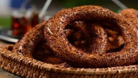
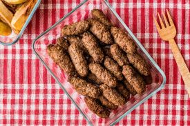
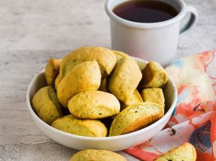
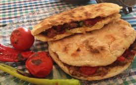

YÖRESEL LEZZETLER

ANKARA SİMİDİ
Ankara'nın simidi bambaşkadır. Sabah sıcacık yediğinizde o kavrulmuş tadı alırsınız. İstanbul ya da İzmir'deki simitler gibi sarı değil bildiğiniz kahverengidir çünkü gerçek pekmezle yapılır.
ÇUBUK TURŞUSU
çubuk turşusu sondan başa incelen bir yapıya sahip farklı cinste salatalıkla hazırlanır. Neredeyse her yemeğin yanında yenebilir.

KURU KÖFTE
anında patates olursa tadından yenmeyendir. Ekmek arası yapılıp yanınıza alabilir, dostu düşmanı acıktırabilirsiniz. Öyle güzeldir.

BEYPAZARI KURUSU
Oldukça sert hale gelene kadar pişirilen hamurun içinde bol tereyağ ve biraz da tarçın vardır.
